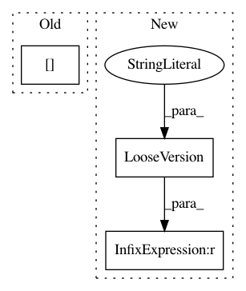

c55c07ac94dcaff834f940d8a3a4df372f354121,nilearn/plotting/img_plotting.py,,_crop_colorbar,#,208
Before Change
cbar.ax.set_ylim(cbar.norm(cbar_vmin), cbar.norm(cbar_vmax))
outline = cbar.outline.get_xy()
outline[:2, 1] += cbar.norm(cbar_vmin)
outline[2:6, 1] -= (1. - cbar.norm(cbar_vmax))
outline[6:, 1] += cbar.norm(cbar_vmin)
cbar.outline.set_xy(outline)
cbar.set_ticks(new_tick_locs, update_ticks=True)
After Change
// matplotlib >= 3.2.0 no longer normalizes axes between 0 and 1
// See https://matplotlib.org/3.2.1/api/prev_api_changes/api_changes_3.2.0.html
if LooseVersion(matplotlib.__version__) >= LooseVersion("3.2.0"):
cbar.ax.set_ylim(cbar_vmin, cbar_vmax)
X, _ = cbar._mesh()
new_X = np.array([X[0], X[-1]])
In pattern: SUPERPATTERN
Frequency: 3
Non-data size: 3
Instances
Project Name: nilearn/nilearn
Commit Name: c55c07ac94dcaff834f940d8a3a4df372f354121
Time: 2020-05-02
Author: ari.e.kahn@gmail.com
File Name: nilearn/plotting/img_plotting.py
Class Name:
Method Name: _crop_colorbar
Project Name: nilearn/nilearn
Commit Name: 04a859c350a68f99e7a7c78974ceb129065f9a20
Time: 2018-01-03
Author: moritz.boos@uni-oldenburg.de
File Name: nilearn/plotting/tests/test_matrix_plotting.py
Class Name:
Method Name: test_matrix_plotting
Project Name: oddt/oddt
Commit Name: 5b3d9d6ddca1dd294e88304d18fac9b4404ef8e3
Time: 2018-05-17
Author: maciek@wojcikowski.pl
File Name: rdkit_fixer.py
Class Name:
Method Name: PreparePDBMol